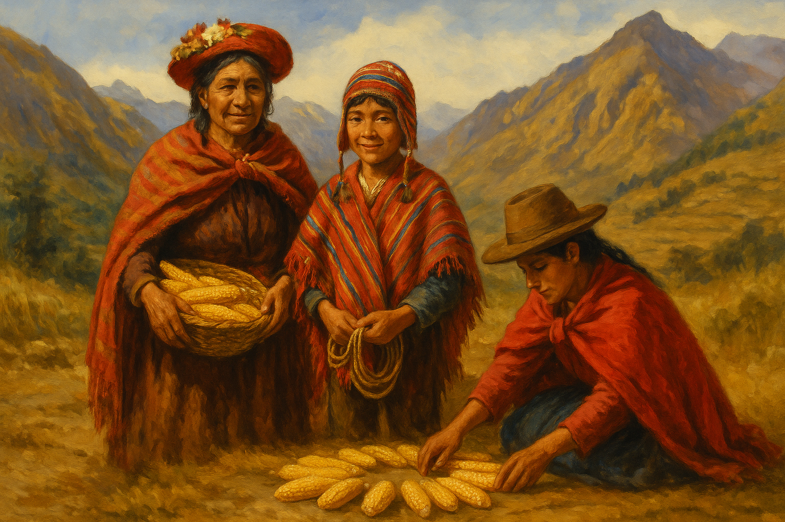
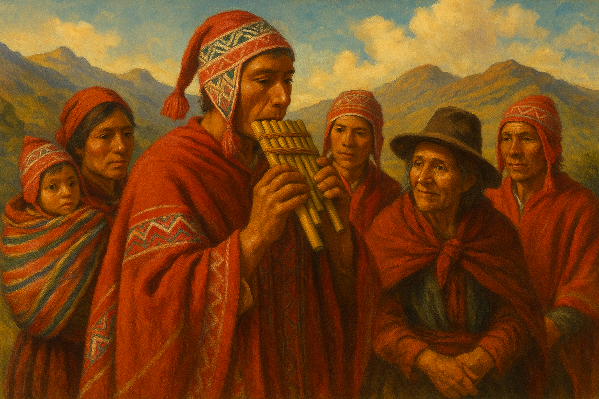
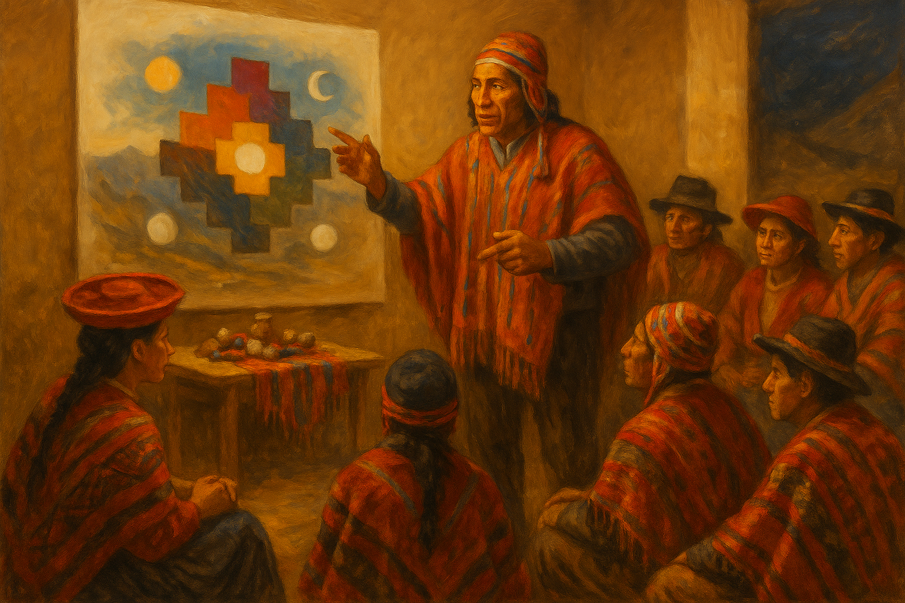
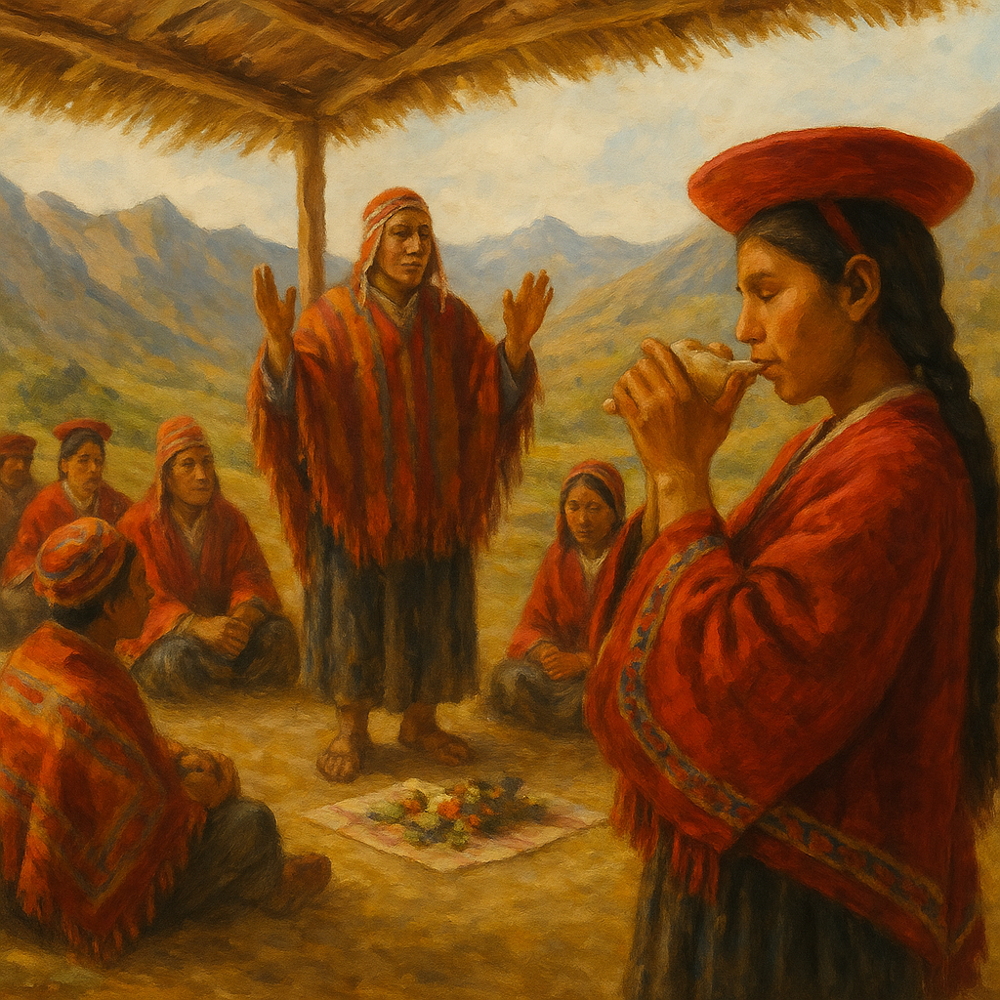

Celebrando el día del indio en España en el 2025
Imágnes del Día del Indio 2025





Eventos Pasados

Celebración del Día del Indio 2024
Celebración del Día del Indio 2023
Celebración del Día del Indio 2022
Celebración del Día del Indio 2021
Testimonios
La importancia de celebrar nuestras raíces y cultura.
"La celebración del Día del Indio me conectó con mis raíces y me hizo sentir orgulloso de mi herencia Quechua."
- María P.Una experiencia inolvidable para toda la familia.
"Los talleres y eventos fueron una experiencia enriquecedora. Me encantó aprender sobre la cosmovisión Quechua."
- Juan R.